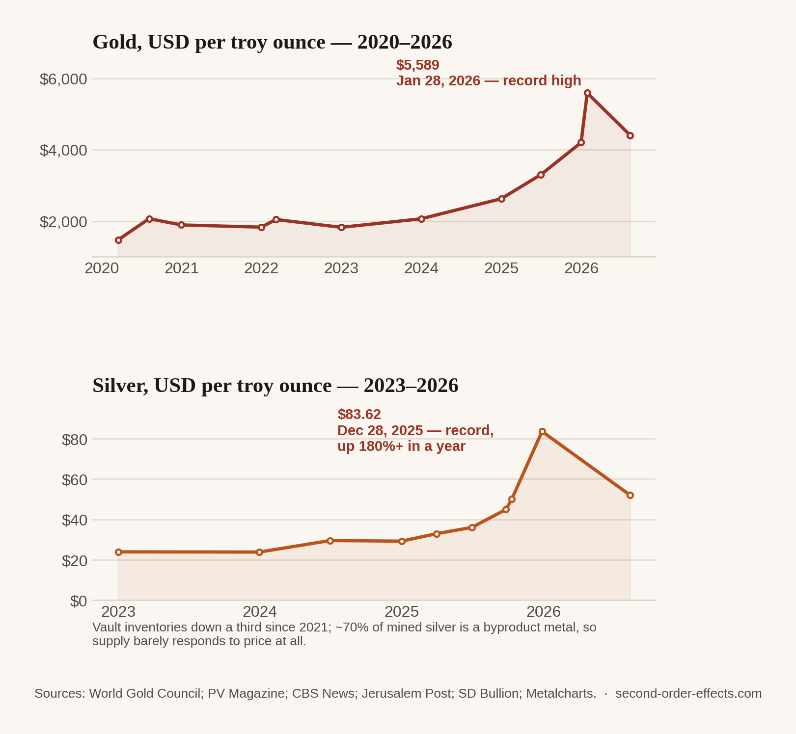

Gold, Silver, and the Question of Which Order Effect This Actually Is
Gold hit a record $5,589 an ounce in January. Silver hit its own record of $83.62 in December, up more than 180% in a year. Every other article on this site treats a price as the effect. This one asks whether, this time, the price is the cause.
Every article on this site so far has followed the same shape: something happens, somewhere, and a price moves as a consequence. Gold and silver are more interesting to me, because the causality runs both directions at once. Every war, every currency wobble, every inflation scare in this site's back catalogue pushed money toward gold as a second-order effect. But gold and silver are also inputs, into jewellery, into electronics, into solar panels, and once their prices move far enough, they stop being a mirror of the world's anxiety and start being a cost that reshapes decisions on their own. This one, I think, is both.
The gold side: a fairly ordinary story taken to an extraordinary level
Gold spent most of 2020 to 2024 in a fairly normal, if elevated, range, ending 2024 around $2,625 an ounce. Then it accelerated hard: past $3,300 by mid-2025, past $4,200 by the end of 2025, and to a record $5,589 on January 28, 2026, before easing back to around $4,405 by August. The proximate drivers read like a highlight reel of everything else on this site: central banks, especially in emerging markets, buying gold at a record pace to diversify away from dollar reserves; persistent inflation; and, this year specifically, the Strait of Hormuz crisis and its accompanying oil spike sending exactly the kind of investors this site keeps writing about toward the one asset that has held its value for five thousand years. Gold going up when the world gets frightening isn't a new story. What's new is the size of the move.

The silver side: this is where the causality actually flips
Silver is the more interesting metal here, because its move wasn't just bigger in percentage terms, it was different in kind. Silver spent 2023 and most of 2024 essentially flat, in the low $20s to high $20s. Then from late 2025 it went nearly vertical: $44.90 by late September, $50 by mid-October, and $83.62 by December 28, more than 180% higher than a year earlier, before settling back to around $52 by August 2026. Some of that is the same safe-haven demand pushing gold. But silver has a structural problem gold doesn't: roughly 70% of mined silver isn't mined for its own sake at all, it comes out of the ground as a byproduct of mining copper, lead, and zinc, which means silver supply barely responds to silver's own price. When demand spikes, miners can't simply decide to dig more silver. Above-ground vault inventories, the buffer that would normally absorb a demand shock, are down roughly a third since 2021. Add solar panel manufacturing, which uses meaningful quantities of silver and has grown enormously over the same stretch, and you have a market where demand can move freely but supply structurally can't.
That's the point where I think the arrow of causality reverses. Gold going up is a second-order effect, of wars, of inflation, of central banks hedging against a weaker dollar. Silver going up started the same way, but once it crossed a certain threshold, the shortage itself became a first-order event: a genuine constraint on solar panel manufacturers, electronics makers, and jewellers, all of whom now face input costs that didn't exist eighteen months ago. A price that starts as a symptom of the world's anxiety can, if it moves far enough, become a fresh cause of the next round of second-order effects.
Most of the events on this site push a price around. Silver's move over the last year did that and then, at some point I can't cleanly date, started pushing back.
Why I've been watching this one from the portfolio side, not the headline side
I've mentioned elsewhere on this site that I help manage a slice of my family's investment portfolio, spread across equities, fixed income, and gold, and this is the article where that involvement stopped being background and became the actual subject. Watching gold and silver from inside a portfolio, rather than as a headline number, teaches you something the charts alone don't: an asset that's supposed to be a hedge against everything else going wrong stops behaving like a hedge once everyone else decides to hold it for the same reason at the same time. The textbook version of gold is that it moves quietly, in the background, insuring the rest of a portfolio against the events this whole site is about. The version I've actually watched over the past year moved as hard as anything else in the book. I don't think that makes the metal less useful to hold. I think it means the second-order effect got large enough to start writing its own first-order story, and that's a distinction worth sitting with the next time something "safe" moves this fast.
Sources
- World Gold Council — Goldhub, gold price and central bank demand data
- PV Magazine — silver demand from solar panel manufacturing
- CBS News — silver price record coverage, December 2025
- The Jerusalem Post — gold price record coverage, January 2026
- SD Bullion — silver vault inventory and byproduct-supply commentary
- Chart data compiled from World Gold Council, Metalcharts, and financial news reporting on gold and silver spot prices, 2020–2026.
Comments